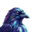
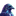
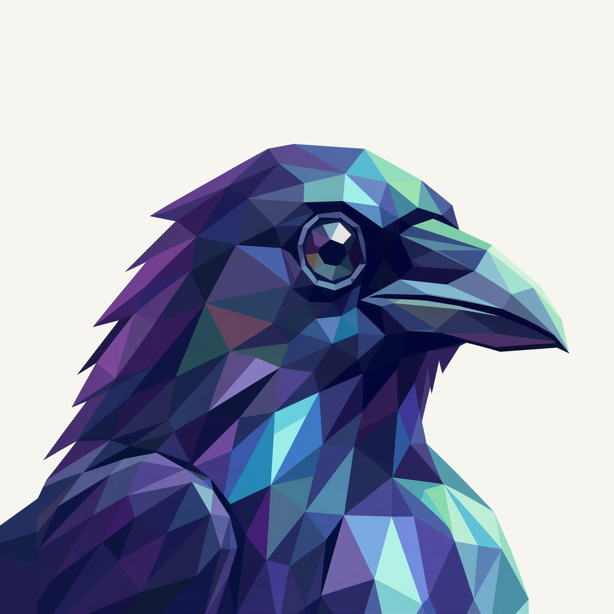
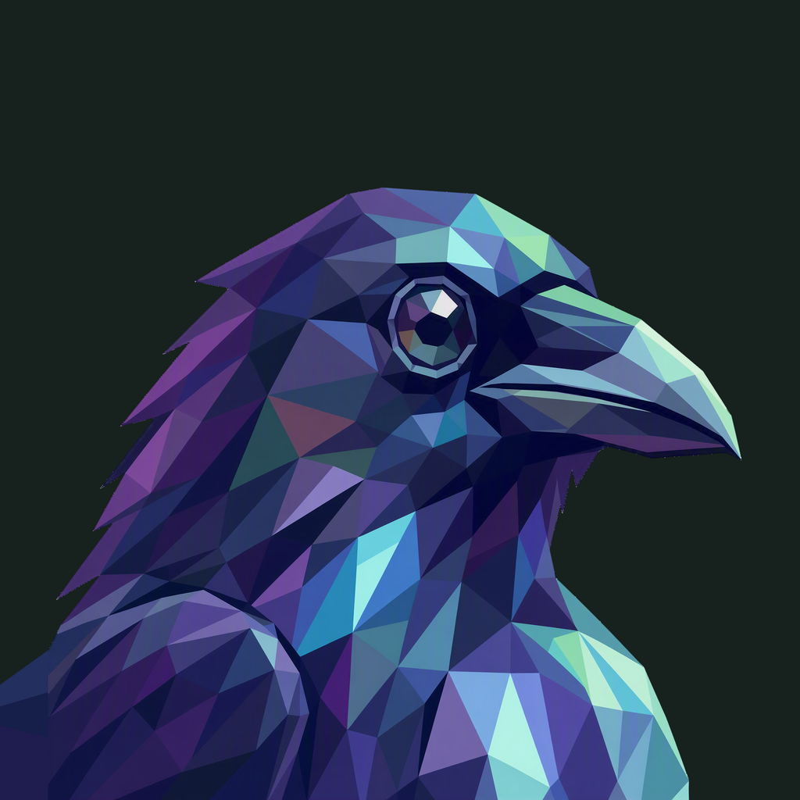

01 / Composition
A glance through the viewfinder
The eye and slightly parted beak retain their familiar angle. Restored rear feathers lead into a folded wing root at the lower-left edge, with no round neck stump.
Animal family · Refined framing
A quiet rightward glance, with complete feathers and a natural wing root.
Adopted framing repair · finishing 02
Native 2048 × 2048

01 / Composition
The eye and slightly parted beak retain their familiar angle. Restored rear feathers lead into a folded wing root at the lower-left edge, with no round neck stump.
02 / Drawing
Connected broad indigo and violet facets carry the portrait. The existing mint and cyan plumage remains restrained; the animal gains no extra prop or competing accent.
03 / Presentation
Staggered pointed feather impressions sit in a lavender field. Broad relief, fine grain, and shallow shadow support the dark bird without repeating another project’s pattern.
Presentation tiles at 128/64 px; transparent artwork for small app and browser marks.


At 32 px, the hooked beak, bright eye, and indigo silhouette remain the strongest cues. At 16 px the feather facets simplify into a dark profile with cool highlights.
A designed background, with colors sampled from the native generated artwork.
Select a swatch to copy its hex value. The Raven UI primary (#6341C8) remains a separate product color.
One transparent foreground, checked on two contrasting backgrounds.


Azure Foundry · gpt-image-2 · one request · native 2048 × 2048
Loading prompt…
The liked original defines the animal, expression, and palette. Frogie guides connected flat facets; these owner-provided boards guide the independent background, offset framing, and matte surface.


{kind=link}
{kind=link}
{kind=link}
{kind=link}
{kind=link}